One and two-way ANOVA with R
Thomas Petzoldt
2021-12-14
Preface
- This HTML document is intended to amend the PDF lecture slides.
- The “long slides”-format aims to make self-study easier. Compared to the pdf version more code is shown to improve reproducibility. Scroll down and then copy the code to your favorite R editor (e.g. RStudio).
- Full source code of the slides is provided in R Markdown format using the “slidy” framework.
- Photos and algae growth data were created as part of a highschool internship project, many thanks to C. Belger for his contribution.
- Please send questions and comments to: https://tu-dresden.de/Members/thomas.petzoldt
Thank you!
ANOVA – Analysis of Variances
- Testing of complex hypothesis as a whole, e.g.:
- more than two samples (multiple test problem),
- several multiple factors (multiway ANOVA)
- elimination of covariates (ANCOVA)
- fixed and/or random effects (variance decomposition methods, mixed effects models)
- Different application scenarios:
- explorative use: Which influence factors are important?
- descriptive use: Fitting of models for process description and forecasting.
- significance tests.
- ANOVA methods are (in most cases) based on linear models.
A practical example
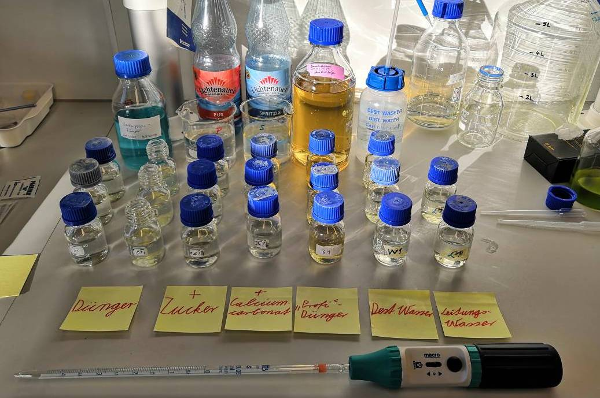
Scientific question
Find a suitable medium for growth experiments with green algae:
- cheap, easy to handle
- suitable for students courses and classroom experiments
Idea
- use a commercial fertilizer with the main nutrients N and P
- mineral water with trace elements
- does non-sparkling mineral water contain enough \(\mathrm{HCO_3^-}\)?
- test how to improve (\(\mathrm{CO_2}\)) availability for photosynthesis
Application
7 Different treatments
- fertilizer solution in closed bottles
- fertilizer solution in open bottles (\(\mathrm{CO_2}\) from air)
- fertilizer + sugar (organic C source)
- fertilizer + additional \(\mathrm{HCO_3^-}\) (add \(\mathrm{CaCO_3}\) to sparkling mineral water)
- a standard algae growth medium (“Basal medium”) for comparison
- deionized (“destilled”) water and tap water for comparison
Experimental design
- each treatment with 3 replicates
- randomized experiment on a shaker
- 16:8 light:dark-cycle
- measurement directly in the bottles using a self-made turbidity meter
Results
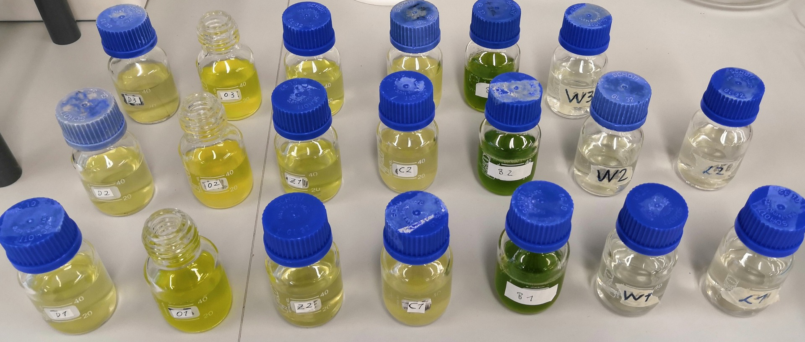 Fertilizer – Open Bottle – F. + Sugar – F. + CaCO3 – Basal medium – A. dest – Tap water
The data set
Data set: Growth from day 2 to day 6 (in relative units)
|
treat
|
replicate 1
|
replicate 2
|
replicate 3
|
|
Fertilizer
|
0.020
|
-0.217
|
-0.273
|
|
F. open
|
0.940
|
0.780
|
0.555
|
|
F.+sugar
|
0.188
|
-0.100
|
0.020
|
|
F.+CaCO3
|
0.245
|
0.236
|
0.456
|
|
Bas.med.
|
0.699
|
0.727
|
0.656
|
|
A.dest
|
-0.010
|
0.000
|
-0.010
|
|
Tap water
|
0.030
|
-0.070
|
NA
|
- NA means “not available,” i.e. a missing value
- the crosstable structure is compact and nice on a slide, but not suitable for data analysis
- therefore, we use the long table format instead
The data in R
dat <- data.frame(
treat = factor(c("Fertilizer", "Fertilizer", "Fertilizer",
"F. open", "F. open", "F. open",
"F.+sugar", "F.+sugar", "F.+sugar",
"F.+CaCO3", "F.+CaCO3", "F.+CaCO3",
"Bas.med.", "Bas.med.", "Bas.med.",
"A.dest", "A.dest", "A.dest",
"Tap water", "Tap water"),
levels=c("Fertilizer", "F. open", "F.+sugar",
"F.+CaCO3", "Bas.med.", "A.dest", "Tap water")),
rep = c(1, 2, 3, 1, 2, 3, 1, 2, 3, 1, 2, 3, 1, 2, 3, 1, 2, 3, 1, 2),
growth = c(0.02, -0.217, -0.273, 0.94, 0.78, 0.555, 0.188, -0.1, 0.02,
0.245, 0.236, 0.456, 0.699, 0.727, 0.656, -0.01, 0, -0.01, 0.03, -0.07)
)
… can be read from a csv-file or entered directly in the code.
Visualization
We can try a boxplot:
boxplot(growth ~ treat, data = dat)
abline(h = 0, lty = "dashed", col = "grey")
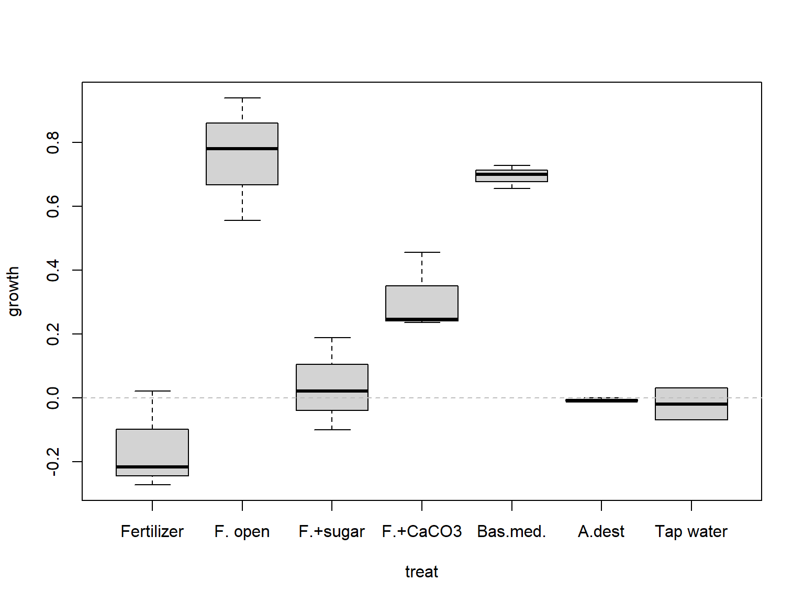
But as we have only 2-3 replicates per box, it is better to use stripchart that shows all individual values:
stripchart(growth ~ treat, data = dat, vertical = TRUE)

Statistical approach and the Bonferroni law
Questions
- Are the treatments different?
- Which medium is the best?
- Is the best medium significantly better than the others?
Hypotheses
- \(H_0\) growth is the same in all treatments
- \(H_A\) differences between media
Why can’t we apply just several t-tests?
- If we have 7 treatments and want to test all against each other, we would need \(7 \cdot (7 - 1) / 2 = 21\) tests.
- If we set \(\alpha = 0.05\) we will get 5% false positives, i.e. one of 20 tests is on average false positive
- This means that we do N tests, we may increase the overall \(\alpha\) error in the worst case to a value of \(N\alpha\).
- This is called alpha-error-inflation or the Bonferroni law:
\[
\alpha_{total} \le \sum_{i=1}^{N} \alpha_i = N \cdot \alpha
\]
- If we ignore the Bonferroni law, we end in statistical fishing i.e. we get spurious results just by chance.
Solutions
- One approach can be to down-correct the alpha errors so that \(\alpha_{total} = 0.05\): Bonferroni rule
- The preferred approach is to use a method that does all tests simultanaeously: the ANOVA.
ANOVA: Analysis of variances
Basic Idea
- Split the total variance into effect(s) and errors:
\[
s_y^2 = s^2_\mathrm{effect} + s^2_{\varepsilon}
\]
- The most surprising is, that we use variances to compare mean values. The reason for this is, that differences of means contribute to the total variance of the whole sample. Sometimes, the variance components are also called variance within (\(s^2_\varepsilon\)) and variance between samples.
- The way how to separate variances is a linear model.
Example
We have two brands of Clementines from a shop “E,” that we encode as “EB” and “EP.” We want to know whether the premium brand (“P”) and the basic brand (“B”) have a different weight.
Instead of a t-test we encode “EB” with 1 and “EP” with 2.
clem <- data.frame(
brand = c("EP", "EB", "EB", "EB", "EB", "EB", "EB", "EB", "EB", "EB", "EB",
"EB", "EB", "EB", "EP", "EP", "EP", "EP", "EP", "EP", "EP", "EB", "EP"),
weight = c(88, 96, 100, 96, 90, 100, 92, 92, 102, 99, 86, 89, 99, 89, 75, 80,
81, 96, 82, 98, 80, 107, 88)
)
clem$code <- as.numeric(factor(clem$brand))
plot(weight ~ code, data = clem, axe = FALSE)
m <- lm(weight ~ code, data = clem)
axis(1, at = c(1,2), labels = c("EB", "EP")); axis(2); box()
abline(m, col = "blue")
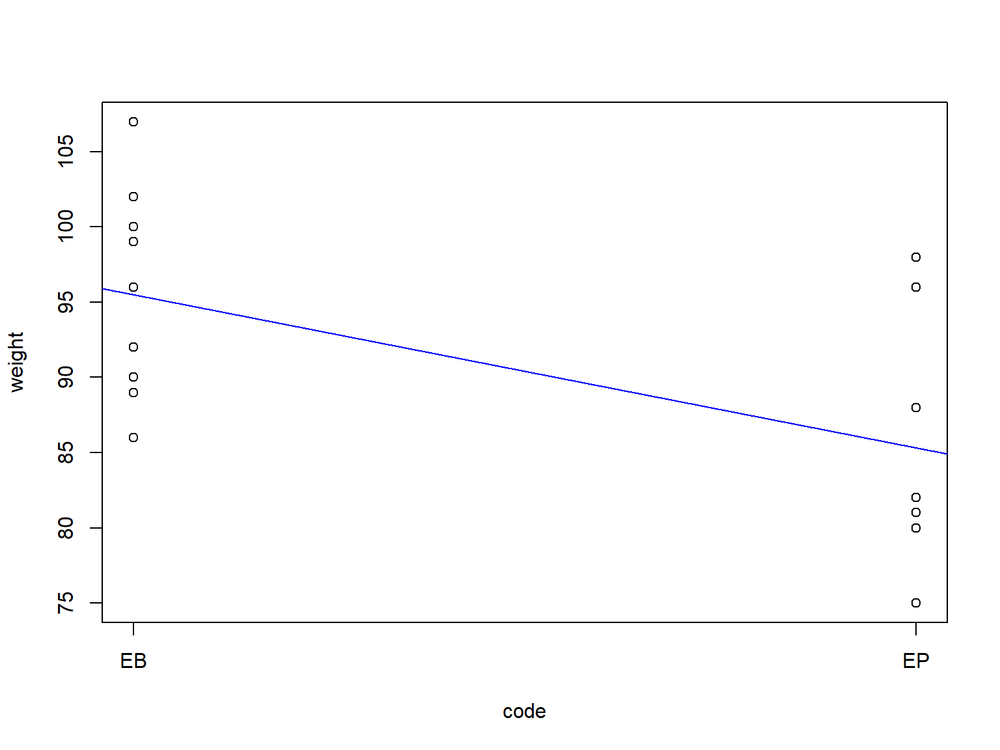
Total variance
(var_tot <- var(clem$weight))
## [1] 68.98814
Residual variance (alias “within variance”)
(var_res <- var(residuals(m)))
## [1] 43.25
Between variance or explained variance
## [1] 0.3730807
Exercise:
- Perform a t-Test for the two Clementine brands
- Compare the p-value of the t-test with the p-value of an ANOVA
ANOVA in R
Back to the algae growth data. Let’s call the linear model m:
m <- lm(growth ~ treat, data=dat)
We can then print the coefficients of the linear model with summary(m), but the more common way is to use the anovafunction
## Analysis of Variance Table
##
## Response: growth
## Df Sum Sq Mean Sq F value Pr(>F)
## treat 6 2.35441 0.39240 25.045 1.987e-06 ***
## Residuals 13 0.20368 0.01567
## ---
## Signif. codes: 0 '***' 0.001 '**' 0.01 '*' 0.05 '.' 0.1 ' ' 1
The ANOVA table shows the F-tests testing for significance of all factors. In the table above, we have only one single factor.
We see that the treatment had a significant effect.
Posthoc tests
The test above showed only, that the factor “treatment” had a significant effect, but we don’t know which levels of the factor are different. Here we apply a so-called posthoc test.
Different posthoc tests exist, here we use the Tukey HSD test that is the most common.
The TukeyHSD function has a numerical and a graphical output.
Tukey HSD test
tk <- TukeyHSD(aov(m))
tk
## Tukey multiple comparisons of means
## 95% family-wise confidence level
##
## Fit: aov(formula = m)
##
## $treat
## diff lwr upr p adj
## F. open-Fertilizer 0.91500000 0.56202797 1.26797203 0.0000103
## F.+sugar-Fertilizer 0.19266667 -0.16030537 0.54563870 0.5211198
## F.+CaCO3-Fertilizer 0.46900000 0.11602797 0.82197203 0.0069447
## Bas.med.-Fertilizer 0.85066667 0.49769463 1.20363870 0.0000231
## A.dest-Fertilizer 0.15000000 -0.20297203 0.50297203 0.7579063
## Tap water-Fertilizer 0.13666667 -0.25796806 0.53130140 0.8837597
## F.+sugar-F. open -0.72233333 -1.07530537 -0.36936130 0.0001312
## F.+CaCO3-F. open -0.44600000 -0.79897203 -0.09302797 0.0102557
## Bas.med.-F. open -0.06433333 -0.41730537 0.28863870 0.9943994
## A.dest-F. open -0.76500000 -1.11797203 -0.41202797 0.0000721
## Tap water-F. open -0.77833333 -1.17296806 -0.38369860 0.0001913
## F.+CaCO3-F.+sugar 0.27633333 -0.07663870 0.62930537 0.1727182
## Bas.med.-F.+sugar 0.65800000 0.30502797 1.01097203 0.0003363
## A.dest-F.+sugar -0.04266667 -0.39563870 0.31030537 0.9994197
## Tap water-F.+sugar -0.05600000 -0.45063473 0.33863473 0.9985686
## Bas.med.-F.+CaCO3 0.38166667 0.02869463 0.73463870 0.0307459
## A.dest-F.+CaCO3 -0.31900000 -0.67197203 0.03397203 0.0879106
## Tap water-F.+CaCO3 -0.33233333 -0.72696806 0.06230140 0.1247914
## A.dest-Bas.med. -0.70066667 -1.05363870 -0.34769463 0.0001792
## Tap water-Bas.med. -0.71400000 -1.10863473 -0.31936527 0.0004507
## Tap water-A.dest -0.01333333 -0.40796806 0.38130140 0.9999997
Graphical output
par(las = 1) # las = 1 make y annotation horizontal
par(mar = c(4, 10, 3, 1)) # more space at the left for axis annotation
plot(tk)
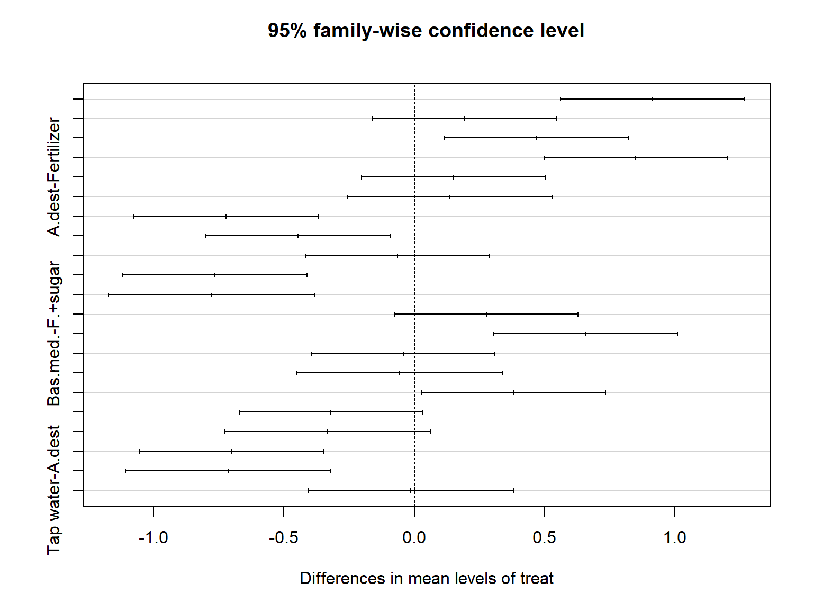
ANOVA assumptions and diagnostics
The assumptions of the ANOVA are the same as for the linear model. In short:
- Independence of errors
- Variance homogeneity
- Approximate normality of errors
Again, graphical methods are preferred. The easiest is plot(m).

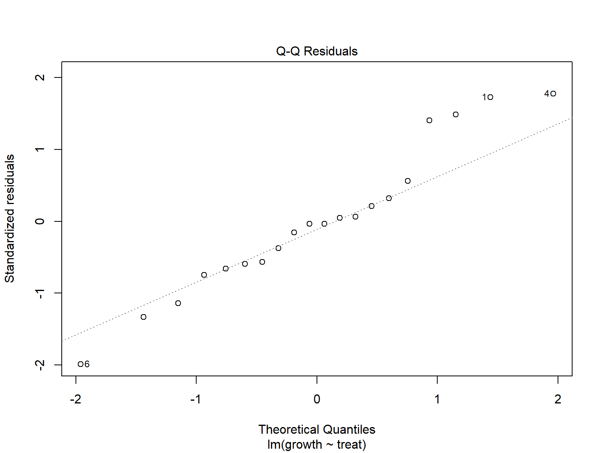
It is also possible to test variance homogeneity. Instead of an F-test that can only compare two variances, we need a test that can compare more than two, for example the Fligner-Killeen-test:
fligner.test(growth ~ treat, data=dat)
##
## Fligner-Killeen test of homogeneity of variances
##
## data: growth by treat
## Fligner-Killeen:med chi-squared = 4.2095, df = 6, p-value = 0.6483
One-way ANOVA with heterogeneous variances
If variances are not equal we can use an extension of the Welch test for \(\ge 2\) samples, in R called oneway.test instead of the one-way ANOVA :
oneway.test(growth ~ treat, data=dat)
##
## One-way analysis of means (not assuming equal variances)
##
## data: growth and treat
## F = 115.09, num df = 6.0000, denom df = 4.6224, p-value = 6.57e-05
Two-way ANOVA
- Example from a statistics text book (Crawley, 2002)
- Effects of diet and coat color on growth of Hamsters in gramm per time (constructed data set)
- Factorial experiment (with replicates)
- Each factor combination (cell) contains more than one observation.
Without replication: only one experiment per factor combination. This is possible, but does not allow to identify interaction effects.
Tidy data
hams <- data.frame(No = 1:12,
growth = c(6.6, 7.2, 6.9, 8.3, 7.9, 9.2,
8.3, 8.7, 8.1, 8.5, 9.1, 9.0),
diet = rep(c("A", "B", "C"), each=2),
coat = rep(c("light", "dark"), each=6)
)
Data set: Growth of hamsters (in gramm)
|
No
|
growth
|
diet
|
coat
|
|
1
|
6.6
|
A
|
light
|
|
2
|
7.2
|
A
|
light
|
|
3
|
6.9
|
B
|
light
|
|
4
|
8.3
|
B
|
light
|
|
5
|
7.9
|
C
|
light
|
|
6
|
9.2
|
C
|
light
|
|
7
|
8.3
|
A
|
dark
|
|
8
|
8.7
|
A
|
dark
|
|
9
|
8.1
|
B
|
dark
|
|
10
|
8.5
|
B
|
dark
|
|
11
|
9.1
|
C
|
dark
|
|
12
|
9.0
|
C
|
dark
|
Visualization and ANOVA
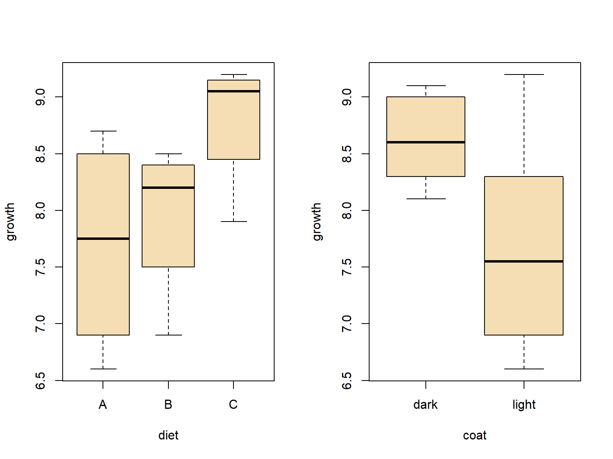
ANOVA
m <- lm(growth ~ coat * diet, data = hams)
anova(m)
## Analysis of Variance Table
##
## Response: growth
## Df Sum Sq Mean Sq F value Pr(>F)
## coat 1 2.61333 2.61333 7.2258 0.03614 *
## diet 2 2.66000 1.33000 3.6774 0.09069 .
## coat:diet 2 0.68667 0.34333 0.9493 0.43833
## Residuals 6 2.17000 0.36167
## ---
## Signif. codes: 0 '***' 0.001 '**' 0.01 '*' 0.05 '.' 0.1 ' ' 1
Interaction plot
with(hams, interaction.plot(diet, coat, growth,
col = c("brown", "orange"), lty = 1, lwd = 2))
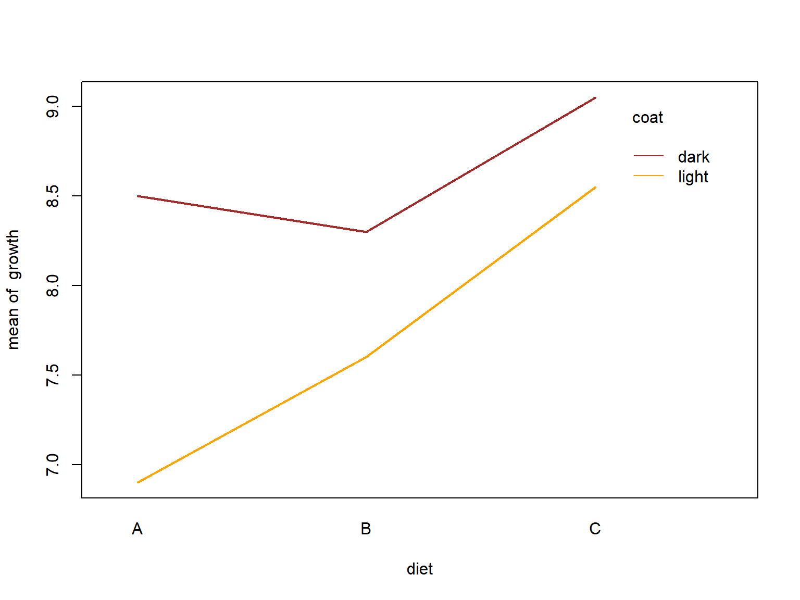
Diagnostics
Assumptions
- Independence of measurements (within samples)
- Variance homogeneity of residuals
- Normal distribution of residuals
Note: test of assumptions only possible after fitting the model.
⇒ Fit the ANOVA model first, then check if it was correct!
- Box plot
- Plot of residuals vs. mean values
- Q-Q-plot of residuals
- Fligner-Killeen test (alternative: some people recommend the Levene-Test)
par(mfrow=c(1, 2))
par(cex=1.2, las=1)
qqnorm(residuals(m))
qqline(residuals(m))
plot(residuals(m)~fitted(m))
abline(h=0)
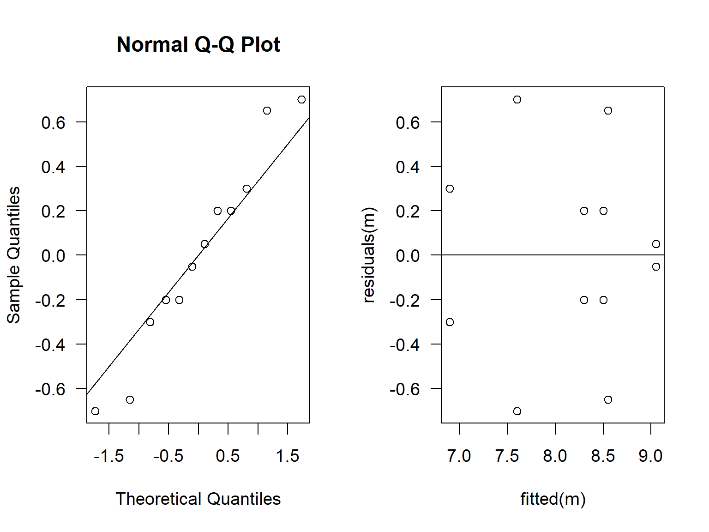
fligner.test(growth ~ interaction(coat, diet), data=hams)
##
## Fligner-Killeen test of homogeneity of variances
##
## data: growth by interaction(coat, diet)
## Fligner-Killeen:med chi-squared = 10.788, df = 5, p-value = 0.05575
The residuals look ok and the p-value of the Fligner test are not significant at the \(p=0.05\) level, so everything looks fine.
However, pre-tests are generally problematic for theoretical reasons, as null hypotheses \(H_0\) can only be rejected and not ultimately confirmed. Furthermore, \(p\) is close to the threshold value and, even more important, the data set is very small. This leaves us with some uncertainty, typical for such cases. It can only be overcome with careful thinking and some experience. It is always a good idea to discuss results with colleagues and supervisors.
Sequential Holm-Bonferroni method
- Also called Holm procedure (Holm, 1979)
- Easy to use
- Can be applied to any multiple test problem
- Less conservative that ordinary Bonferroni correction, but …
- … still a very conservative approach
- see also Wikipedia
Algorithm
- Select smallest \(p\) out of all \(n\) \(p\)-values
- If \(p \cdot n < \alpha\) \(\Rightarrow\) significant, else STOP
- Set \(n − 1 \rightarrow n\), remove smallest \(p\) from the list and go to step 1.
Example
Growth rate per day (\(d^{-1}\)) of blue-green algae cultures (Pseudanabaena) after adding toxic peptides from another blue-green algae (Microcystis).
The original hypothesis was that Microcystin LR (MCYST) or a derivative of it (Substance A) inhibits growth.
mcyst <- data.frame(treat = factor(c(rep("Control", 5),
rep("MCYST", 5),
rep("Subst A", 5)),
levels=c("Control", "MCYST", "Subst A")),
mu = c(0.086, 0.101, 0.086, 0.086, 0.099,
0.092, 0.088, 0.093, 0.088, 0.086,
0.095, 0.102, 0.106, 0.106, 0.106)
)
Approach 1: one-way ANOVA
par(mar=c(4, 8, 2, 1), las=1)
m <- lm(mu ~ treat, data=mcyst)
anova(m)
## Analysis of Variance Table
##
## Response: mu
## Df Sum Sq Mean Sq F value Pr(>F)
## treat 2 0.00053293 2.6647e-04 8.775 0.004485 **
## Residuals 12 0.00036440 3.0367e-05
## ---
## Signif. codes: 0 '***' 0.001 '**' 0.01 '*' 0.05 '.' 0.1 ' ' 1
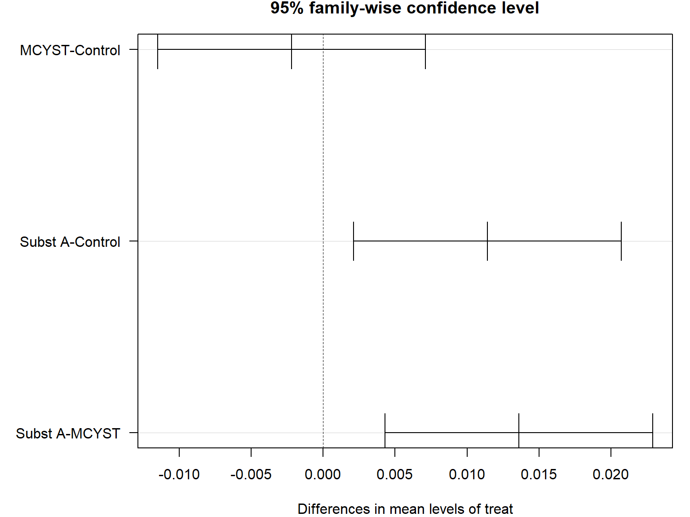
Approach 2: multiple t-Tests with sequential Bonferroni correction
We separate the data set in single subsets:
Control <- mcyst$mu[mcyst$treat == "Control"]
MCYST <- mcyst$mu[mcyst$treat == "MCYST"]
SubstA <- mcyst$mu[mcyst$treat == "Subst A"]
and perform 3 t-Tests:
p1 <- t.test(Control, MCYST)$p.value
p2 <- t.test(Control, SubstA)$p.value
p3 <- t.test(MCYST, SubstA)$p.value
The following shows the raw p-values without correction:
## [1] 0.576275261 0.027378832 0.001190592
and with Holm correction:
## [1] 0.576275261 0.054757664 0.003571775
Conclusions
Statistical methods
- In case of Holm-corrected t-tests, only a signle p-value (MCYST vs. Subst A) remains significant. This indicates that in this case, Holm’s method is more conservative than TukeyHSD (only one compared to two significant) effects.
- An ANOVA with posthoc test is in general preferred,
- but the sequential Holm-Bonferroni can be helpful in special cases.
- Moreover, it demonstrates clearly that massive multiple testing needs to be avoided.
\(\Rightarrow\) ANOVA is to be preferred, when possible.
Interpretation
- Regarding our original hypothesis, we can see that MCYST and SubstA did not inhibit growth of Pseudanabaena. In fact SubstA stimulated growth.
- This was contrary to our expectations – the biological reason was then found 10 years later.
More about this can be found in Jähnichen et al. (2001), Jähnichen et al. (2007), Jähnichen et al. (2011), Zilliges et al. (2011) or Dziallas & Grossart (2011).
ANCOVA
Statistical question
- Comparison of regression lines
- Similar to ANOVA, but contains also metric variables (covariates)
Example
Annette Dobson’s birthweight data. A data set from a statistics textbook (Dobson, 2013), birth weight of boys and girls in dependence of the pregnancy week.
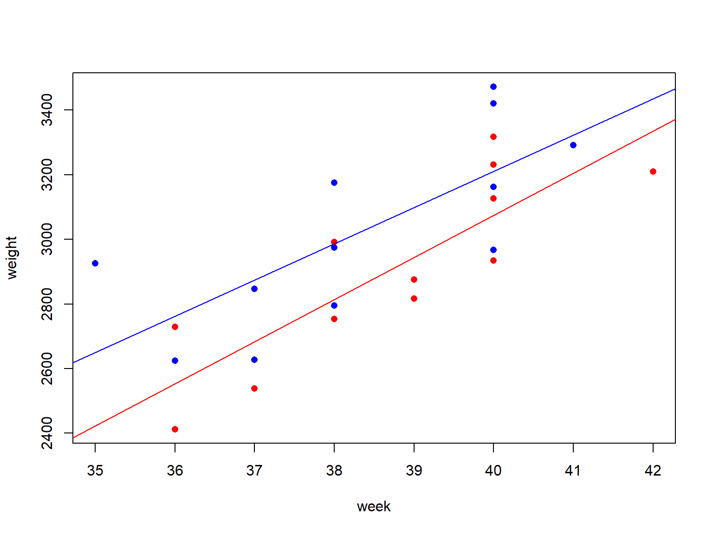
The data set is found at different places on the internet and in different versions.
Here the version that is found in an R demo: demo(lm.glm)
## Birth Weight Data see stats/demo/lm.glm.R
dobson <- data.frame(
week = c(40, 38, 40, 35, 36, 37, 41, 40, 37, 38, 40, 38,
40, 36, 40, 38, 42, 39, 40, 37, 36, 38, 39, 40),
weight = c(2968, 2795, 3163, 2925, 2625, 2847, 3292, 3473, 2628, 3176,
3421, 2975, 3317, 2729, 2935, 2754, 3210, 2817, 3126, 2539,
2412, 2991, 2875, 3231),
sex = gl(2, 12, labels=c("M", "F"))
)
Summary: Linear regression, ANOVA and ANCOVA
- ANCOVA (analysis of covariance) deals with the comparison of regression lines
- Simply speaking, we can distinguish the following:
- independent variables have metric scale: linear regression
- independent variables all nominal (factor): ANOVA
- independent variables are mixed nominal and metric: ANCOVA
For the linear models discussed so far, the dependent variable is always metric, while binary or nominal dependent variables can be handled with generalized linear models (GLM).
Anette Dobson’s birthweight data
Why not just using a t-test?
boxplot(weight ~ sex,data=dobson, ylab="weight")
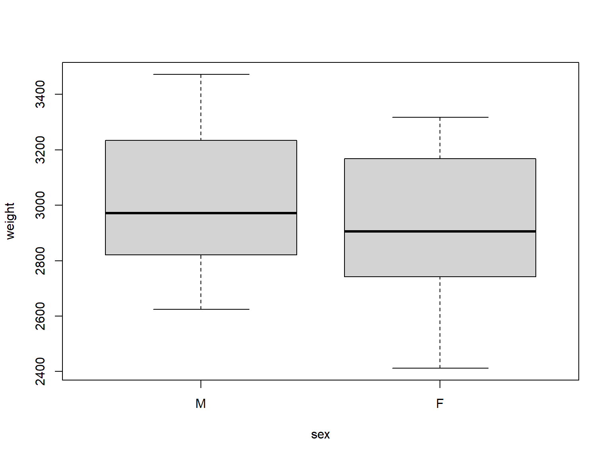
t.test(weight ~ sex, data=dobson, var.equal=TRUE)
##
## Two Sample t-test
##
## data: weight by sex
## t = 0.97747, df = 22, p-value = 0.339
## alternative hypothesis: true difference in means between group M and group F is not equal to 0
## 95 percent confidence interval:
## -126.3753 351.7086
## sample estimates:
## mean in group M mean in group F
## 3024.000 2911.333
The box plot shows much overlap and the difference is not significant, because the t-test ignores important information: the pregnancy week.
ANCOVA makes use of covariates
m <- lm(weight ~ week * sex, data=dobson)
anova(m)
## Analysis of Variance Table
##
## Response: weight
## Df Sum Sq Mean Sq F value Pr(>F)
## week 1 1013799 1013799 31.0779 1.862e-05 ***
## sex 1 157304 157304 4.8221 0.04006 *
## week:sex 1 6346 6346 0.1945 0.66389
## Residuals 20 652425 32621
## ---
## Signif. codes: 0 '***' 0.001 '**' 0.01 '*' 0.05 '.' 0.1 ' ' 1
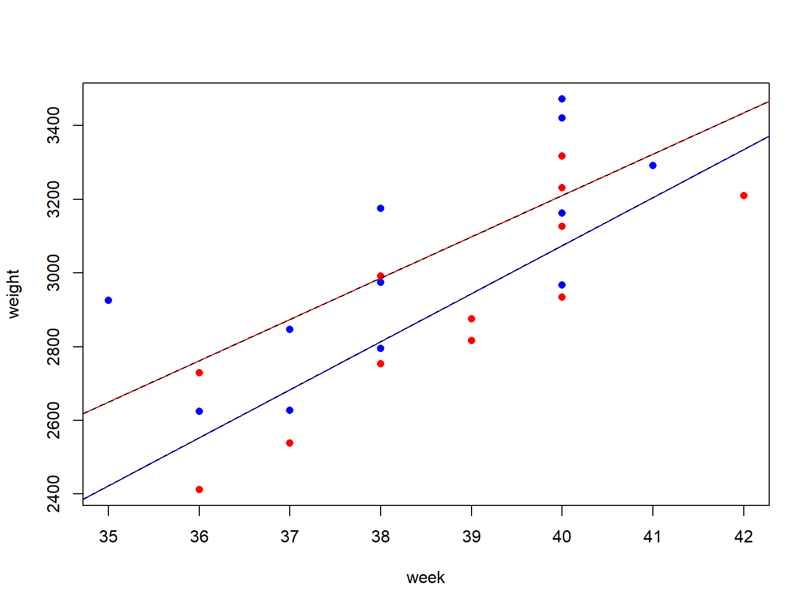
How this works
plot(weight ~ week, data=dobson, col=c("blue","red")[as.numeric(sex)], pch=16)
summary(m)
##
## Call:
## lm(formula = weight ~ week * sex, data = dobson)
##
## Residuals:
## Min 1Q Median 3Q Max
## -246.69 -138.11 -39.13 176.57 274.28
##
## Coefficients:
## Estimate Std. Error t value Pr(>|t|)
## (Intercept) -1268.67 1114.64 -1.138 0.268492
## week 111.98 29.05 3.855 0.000986 ***
## sexF -872.99 1611.33 -0.542 0.593952
## week:sexF 18.42 41.76 0.441 0.663893
## ---
## Signif. codes: 0 '***' 0.001 '**' 0.01 '*' 0.05 '.' 0.1 ' ' 1
##
## Residual standard error: 180.6 on 20 degrees of freedom
## Multiple R-squared: 0.6435, Adjusted R-squared: 0.59
## F-statistic: 12.03 on 3 and 20 DF, p-value: 0.000101
p <- coef(m)
abline(a=p[1], b=p[2], col="red")
abline(a=p[1]+p[3], b=p[2]+p[4], col="blue")
## the result is the same as when we would fit separate linear models
fem <- lm(weight ~ week, data=dobson, subset = sex=="F")
mal <- lm(weight ~ week, data=dobson, subset = sex=="M")
abline(fem, col="black", lty="dashed")
abline(mal, col="black", lty="dashed")
Pitfalls of the ANOVA described so far
- Heterogeneity of variance
- p-values can be biased (i.e. misleading or wrong)
- use of a one-way ANOVA for uneaqual variances (Welch, 1951); in R:
oneway.test
- Unbalanced case:
unequal number of samples for each factor combination
- ANOVA results depend on the order of factors in the model formula.
- Classical method: Type II or Type III ANOVA
- Modern approach: model selection and likelihood ratio tests
Type II and Type III ANOVA
- function
Anova (with upper case A) in package car
- Help of function Anova: “Type-II tests are calculated according to the principle of marginality, testing each term after all others, except ignoring the term’s higher-order relatives; so-called type-III tests violate marginality, testing each term in the model after all of the others.”
- Conclusion: use Type II and don’t try to interpret single terms in case of significant interactions.
Type II and Type III ANOVA: Example
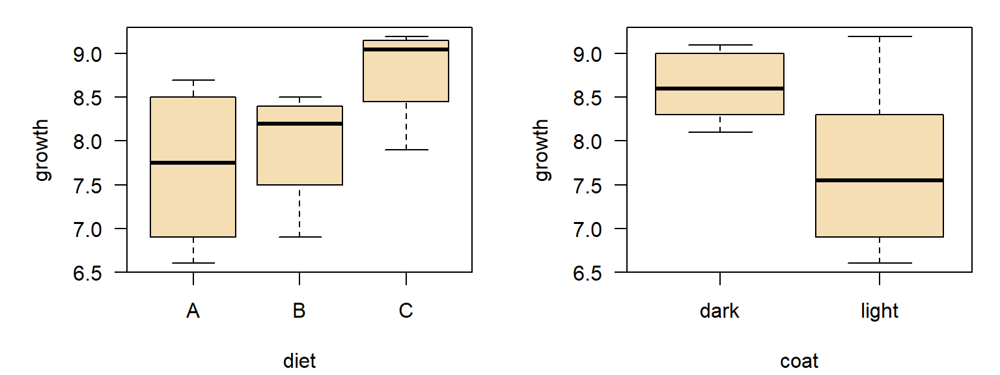
library("car")
m <- lm(growth ~ coat * diet, data = hams)
Anova(m, type="II")
## Anova Table (Type II tests)
##
## Response: growth
## Sum Sq Df F value Pr(>F)
## coat 2.61333 1 7.2258 0.03614 *
## diet 2.66000 2 3.6774 0.09069 .
## coat:diet 0.68667 2 0.9493 0.43833
## Residuals 2.17000 6
## ---
## Signif. codes: 0 '***' 0.001 '**' 0.01 '*' 0.05 '.' 0.1 ' ' 1
Model selection – a paradigm change
Problem:
- In complicated models, p-values depend on number (and sometimes of order) of included factors and interactions.
- The \(H_0\)-based approach becomes confusing, e.g. because of contradictory p-values.
Alternative approach:
Comparison of different model candidates instead of p-value based testing.
- Model with all potentiall effects → full model,
- Omit single factors → reduced models (several!),
- No influence factors (ony mean value) → null model.
- Which model is the best → minimal adequate model?
How can we measure which model is the best?
Compromize between model fit and model complexity (number of parameters, k).
- Goodness of fit: Likelihood L (measures how good the data match a given model).
- Log Likelihood: makes the criterion additive.
- AIC (Akaike Information Criterion):
\[AIC = −2 \ln(L) + 2k\]
- Alternative: BIC (Bayesian Information Criterion), takes sample size into account (\(n\)):
\[BIC = −2 \ln(L) + k · \ln(n)\]
The model with the smallest AIC (or BIC) is considered as minimal adequate (i.e. optimal) model.
Self study
Read the paper of Johnson & Omland (2004) https://doi.org/10.1016/j.tree.2003.10.013 to gain more understanding the model selection paradigm.
Model Selection and Likelihood Ratio Tests
Approach
- Fit several models individually
- Compare the models pairwise with ANOVA (likelihood ratio test)
- Or: select model with minimum AIC
Data and example
hams <- data.frame(No=1:12,
growth=c(6.6, 7.2, 6.9, 8.3, 7.9, 9.2,
8.3, 8.7, 8.1, 8.5, 9.1, 9.0),
diet= rep(c("A", "B", "C"), each=2),
coat= rep(c("light", "dark"), each=6)
)
m1 <- lm(growth ~ diet * coat, data=hams)
m2 <- lm(growth ~ diet + coat, data=hams)
anova(m1, m2)
## Analysis of Variance Table
##
## Model 1: growth ~ diet * coat
## Model 2: growth ~ diet + coat
## Res.Df RSS Df Sum of Sq F Pr(>F)
## 1 6 2.1700
## 2 8 2.8567 -2 -0.68667 0.9493 0.4383
The AIC can be shown with AIC:
## df AIC
## m1 7 27.53237
## m2 5 26.83151
- Likelihood ratio test compares two models (
anova with > 1 model)
- Model with interaction (
m1) not significantly better than model without interaction (m2).
Conclusion: take the simpler model (m2)
Exercise: Generate all possible models and select the model with minimum AIC.
Automatic Model Selection
- The full model is supplied to the
step function.
- The modell with the smallest AIC ist the minimal adequate model:
m1 <- lm(growth ~ diet * coat, data=hams)
step(m1)
## Start: AIC=-8.52
## growth ~ diet * coat
##
## Df Sum of Sq RSS AIC
## - diet:coat 2 0.68667 2.8567 -9.2230
## <none> 2.1700 -8.5222
##
## Step: AIC=-9.22
## growth ~ diet + coat
##
## Df Sum of Sq RSS AIC
## <none> 2.8567 -9.2230
## - diet 2 2.6600 5.5167 -5.3256
## - coat 1 2.6133 5.4700 -3.4275
##
## Call:
## lm(formula = growth ~ diet + coat, data = hams)
##
## Coefficients:
## (Intercept) dietB dietC coatlight
## 8.1667 0.2500 1.1000 -0.9333
Summary
- Linear models form the basis of many statistical methods
- Linear regression
- ANOVA, ANCOVA, GLM, GAM, GLMM, . . .
- ANOVA/ANCOVA instead of multiple testing
- ANOVA is more powerful than multiple tests:
- one big experiment needs less n than many small experiments together
- identification of interaction effects
- elimination of co-variates
- Model selection vs. p-value based testing
- paradigm shift in statistics: AIC instead of p-value
- more reliable, especially for imbalanced or complex designs
- but: p-value based tests are sometimes easier to understand
Avoid p-value hacking
Do NOT repeat experiments until a significant p-value is found.
“As debate rumbles on about how and how much poor statistics is to blame for poor reproducibility, Nature asked influential statisticians to recommend one change to improve science. The common theme? The problem is not our maths, but ourselves.”
Leek et al. (2017) https://doi.org/10.1038/d41586-017-07522-z
- Jeff Leek: Adjust for human cognition
- Blakeley B. McShane & Andrew Gelman: Abandon statistical significance
- David Colquhoun: State false-positive risk, too
- Michèle B. Nuijten: Share analysis plans and results
- Steven N. Goodman: Change norms from within
Another blog post that aims to improve understanding: http://daniellakens.blogspot.de/2017/12/understanding-common-misconceptions.html?m=1
My conclusion: The p-value is still useful but apply it with great care.
Copyright
This resource was created by tpetzoldt. It is provided as is without warranty.
Bibliography
Crawley, M. J. (2002).
Statistical computing. An introduction to data analysis using S-PLUS (pp. 1–761). Wiley.
datasets: http://www.bio.ic.ac.uk/research/mjcraw/statcomp/data/
Dobson, A. J. (2013). Introduction to statistical modelling. Springer.
Dziallas, C., & Grossart, H.-P. (2011). Increasing
Oxygen Radicals and
Water Temperature Select for
Toxic Microcystis sp.
PLoS ONE,
6(9), e25569.
https://doi.org/10.1371/journal.pone.0025569
Holm, S. (1979). A simple sequentially rejective multiple test procedure.
Scandinavian Journal of Statistics, 65–70.
https://www.jstor.org/stable/4615733
Jähnichen, S., Ihle, T., Petzoldt, T., & Benndorf, J. (2007). Impact of
Inorganic Carbon Availability on
Microcystin Production by
Microcystis aeruginosa
PCC 7806.
Applied and Environmental Microbiology,
73(21), 6994–7002.
https://doi.org/10.1128/AEM.01253-07
Jähnichen, S., Long, B. M., & Petzoldt, T. (2011). Microcystin production by
Microcystis aeruginosa:
Direct regulation by multiple environmental factors.
Harmful Algae,
12, 95–104.
https://doi.org/10.1016/j.hal.2011.09.002
Jähnichen, S., Petzoldt, T., & Benndorf, J. (2001). Evidence for control of microcystin dynamics in
Bautzen Reservoir (
Germany) by cyanobacterial population growth rates and dissolved inorganic carbon.
Fundamental and Applied Limnology,
150(2), 177–196.
https://doi.org/10.1127/archiv-hydrobiol/150/2001/177
Johnson, G., Jerald, & Omland, K. S. (2004). Model
Selection in
Ecology and
Evolution.
Trends in Ecology and Evolution,
19(2), 101–108.
https://doi.org/10.1016/j.tree.2003.10.013
Zilliges, Y., Kehr, J.-C., Meissner, S., Ishida, K., Mikkat, S., Hagemann, M., Kaplan, A., Börner, T., & Dittmann, E. (2011). The
Cyanobacterial Hepatotoxin Microcystin Binds to
Proteins and
Increases the
Fitness of
Microcystis under
Oxidative Stress Conditions.
PLoS ONE,
6(3), e17615.
https://doi.org/10.1371/journal.pone.0017615